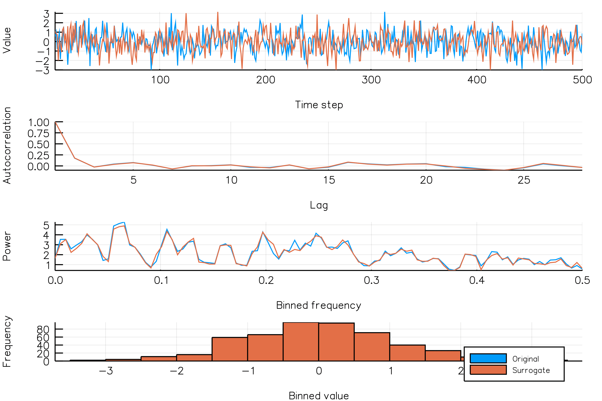
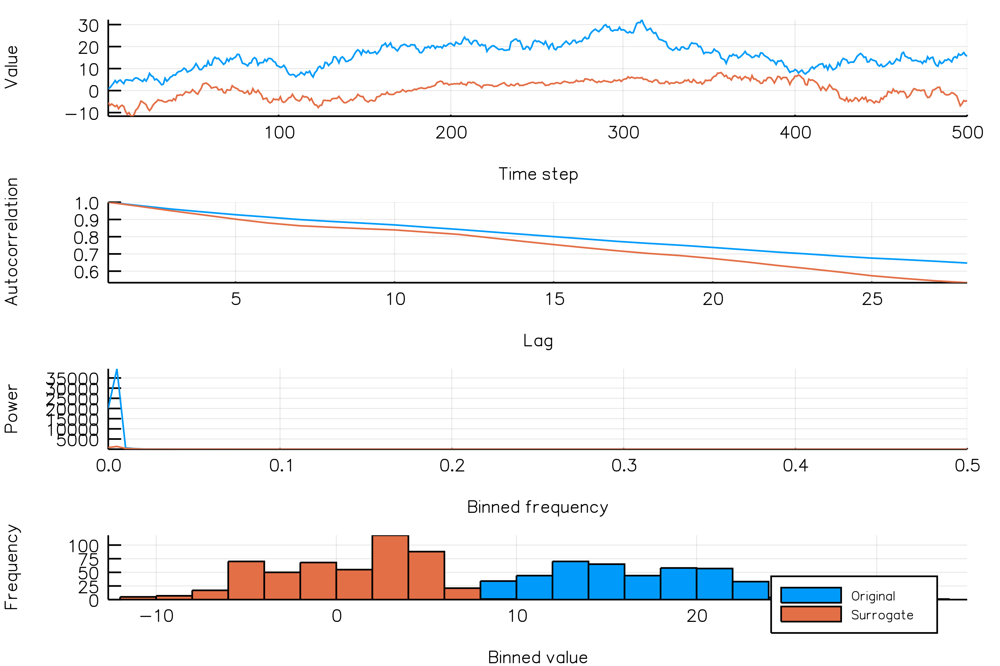

Visualizing surrogates
Autocorrelation / periodogram panels
Visualizing a surrogate realization is easy.
Let's say we want to generate an IAAFT surrogate and visualize the time series and surrogate time series, together with the corresponding periodograms, autocorrelation functions and histograms. This can be done as follows:
using TimeseriesSurrogates
ts = diff(rand(300))
iaaft_plot(ts)Here, the blue lines correspond to the original time series, while orange lines correspond to the surrogate time series. In this particular case, it seems that the IAAFT surrogate well reproduced the autocorrelation of the original time series.
All surrogate functions come have a complementary functions that also plots a panel showing the autocorrelation function and periodogram of the time series and its surrogate realization:
randomphaseshasrandomphases_plotrandomamplitudeshasrandomamplitudes_plotaafthasaaft_plotiaafthasiaaft_plot
Animate panels (and export to .gif)
Say you want to examine which surrogate method is suited for a particular dataset. It would then be useful to visualize multiple surrogate realizations for that time series.
For this purpose, each surrogate function comes with a corresponding animation functions (randomphases_anim, randomamplitudes_anim, aaft_anim, iaaft_anim) and gif creation functions (randomphases_gif, randomamplitudes_gif, aaft_gif, iaaft_gif).
You can either generate the gif file directly, or create a Plots.animation instance containing the animation.
Here's some examples:
using TimeseriesSurrogates
ts = diff(rand(300))
# Creating a gif directly
# Create a gif using the default number (15) surrogates
iaaft_gif(ts)
iaaft_gif(ts, fps = 3) # specify frame rate
# Specify that we want 100 different surrogate realizations
iaaft_gif(ts, n_iters = 100)
iaaft_gif(ts, n_iters = 100, fps = 1) # specify frame rateIf you for some reason don't want a gif directly, then you could do
# Use the `gif` function from `Plots.jl` to create a gif
anim = iaaft_anim(ts, n_iters = 50) # create an animation
gif(anim)
gif(anim, fps = 3) # specifying frame rateExamples
IAAFT realizations of an AR1 process
iaaft_AR1_gif(n_iters = 20, fps = 2)
IAAFT realizations of a NSAR2 process
iaaft_NSAR2_gif(n_iters = 100, fps = 10)
Random phase realizations of a random walk
randomphases_randomwalk_gif(n_iters = 10, fps = 1, new_realization_every_iter = true)
Plot/animation/gif docs
You can use any of the following functions to generate plots, animations and the animations as gif files.
TimeseriesSurrogates.randomshuffle_plot — Function. `TimeseriesSurrogates.randomshuffle_plot(ts)`
Visualize a `TimeseriesSurrogates.randomshuffle` surrogate.TimeseriesSurrogates.randomamplitudes_plot — Function. `TimeseriesSurrogates.randomamplitudes_plot(ts)`
Visualize a `TimeseriesSurrogates.randomamplitudes` surrogate.TimeseriesSurrogates.randomphases_plot — Function. `TimeseriesSurrogates.randomphases_plot(ts)`
Visualize a `TimeseriesSurrogates.randomphases` surrogate.TimeseriesSurrogates.aaft_plot — Function. `TimeseriesSurrogates.aaft_plot(ts)`
Visualize a `TimeseriesSurrogates.aaft` surrogate.TimeseriesSurrogates.iaaft_plot — Function. `TimeseriesSurrogates.iaaft_plot(ts)`
Visualize a `TimeseriesSurrogates.iaaft` surrogate.TimeseriesSurrogates.randomshuffle_anim — Function. `TimeseriesSurrogates.randomshuffle_anim(ts; [n_iters::Int])`
Create `n_iters` `TimeseriesSurrogates.randomshuffle` surrogates for `ts` and animate them. Returns a `Plots.Animation` instance.TimeseriesSurrogates.randomamplitudes_anim — Function. `TimeseriesSurrogates.randomamplitudes_anim(ts; [n_iters::Int])`
Create `n_iters` `TimeseriesSurrogates.randomamplitudes` surrogates for `ts` and animate them. Returns a `Plots.Animation` instance.TimeseriesSurrogates.randomphases_anim — Function. `TimeseriesSurrogates.randomphases_anim(ts; [n_iters::Int])`
Create `n_iters` `TimeseriesSurrogates.randomphases` surrogates for `ts` and animate them. Returns a `Plots.Animation` instance.TimeseriesSurrogates.aaft_anim — Function. `TimeseriesSurrogates.aaft_anim(ts; [n_iters::Int])`
Create `n_iters` `TimeseriesSurrogates.aaft` surrogates for `ts` and animate them. Returns a `Plots.Animation` instance.TimeseriesSurrogates.iaaft_anim — Function. `TimeseriesSurrogates.iaaft_anim(ts; [n_iters::Int])`
Create `n_iters` `TimeseriesSurrogates.iaaft` surrogates for `ts` and animate them. Returns a `Plots.Animation` instance.TimeseriesSurrogates.randomshuffle_gif — Function. `TimeseriesSurrogates.randomshuffle_gif(ts; [n_iters::Int])`
Create `n_iters` `TimeseriesSurrogates.randomshuffle` surrogates for `ts`, animate them and create
a gif from the animation.TimeseriesSurrogates.randomamplitudes_gif — Function. `TimeseriesSurrogates.randomamplitudes_gif(ts; [n_iters::Int])`
Create `n_iters` `TimeseriesSurrogates.randomamplitudes` surrogates for `ts`, animate them and create
a gif from the animation.TimeseriesSurrogates.randomphases_gif — Function. `TimeseriesSurrogates.randomphases_gif(ts; [n_iters::Int])`
Create `n_iters` `TimeseriesSurrogates.randomphases` surrogates for `ts`, animate them and create
a gif from the animation.TimeseriesSurrogates.aaft_gif — Function. `TimeseriesSurrogates.aaft_gif(ts; [n_iters::Int])`
Create `n_iters` `TimeseriesSurrogates.aaft` surrogates for `ts`, animate them and create
a gif from the animation.TimeseriesSurrogates.iaaft_gif — Function. `TimeseriesSurrogates.iaaft_gif(ts; [n_iters::Int])`
Create `n_iters` `TimeseriesSurrogates.iaaft` surrogates for `ts`, animate them and create
a gif from the animation.